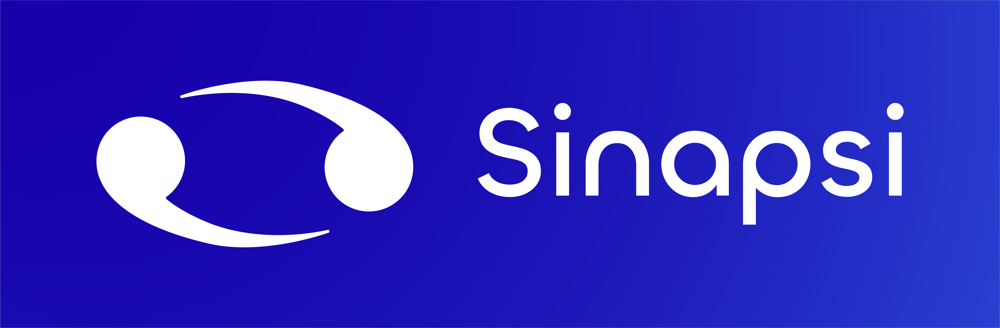
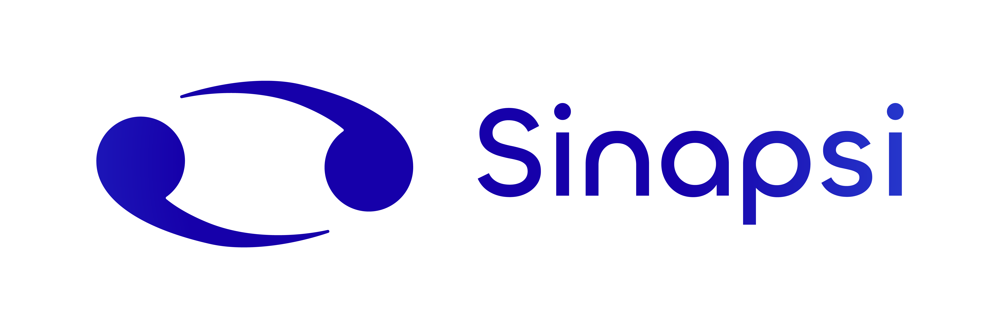

Sinapsi
Logo design for a newborn tech company.

Sinapsi is a newborn electronic components company, i got asked for a
logo that reminds the concept of "synapse": this is what i came out
with.
The final result is based off a sketch made by the company founder. Since the scientific definition of a "synapse" is not known by many, the rapresentation of two ideal neurons running after each other, should be enough to depict the concept.
The final result is based off a sketch made by the company founder. Since the scientific definition of a "synapse" is not known by many, the rapresentation of two ideal neurons running after each other, should be enough to depict the concept.

